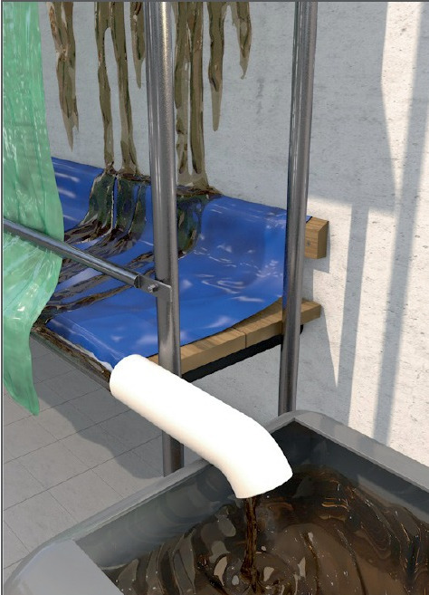

Reinigen, Abbeizen und
Konservieren von Fassaden
|
|

Gefährdungen
- Inhaltsstoffe von Abbeizern, Graffiti-Entfernern, Fassadenreinigungs- und -konservierungsmitteln können bei der Aufnahme über die Haut oder beim Einatmen zu Gesundheitsschäden führen.
Allgemeines
- Bei der Behandlung von Außenflächen kommen verschiedene Gefahrstoffe zur Anwendung:
- Reiniger (z. B. Säuren und deren Gemische, sowie Laugen)
- Abbeizer und Graffiti-Entferner (z. B. Löse- und Verdünnungsmittel)
- Konservierungsmittel (z. B. Silikonharze und Siloxane)
- Abbeizer, Graffiti-Entferner
und Farbentferner sowie Hinweise
zu den erforderlichen
Schutzmaßnahmen entsprechend
Empfehlung der BG BAU
verwenden, siehe Gefahrstoffinformationssystem der
BG BAU – WINGIS (www.wingisonline.de).
Schutzmaßnahmen
Schutz der Beschäftigten
- Vor Beginn der Arbeiten hat
der Unternehmer im Rahmen der
Gefährdungsbeurteilung zu
prüfen, ob durch ein anderes
Arbeitsverfahren oder einen ungefährlicheren
Stoff das Risiko
einer Gesundheitsschädigung
gemindert werden kann.
-
Bei Verwendung eines Gefahrstoffes
Schutzmaßnahmen festlegen,
z. B. hinsichtlich
- Lagerung,
- Handhabung,
- Brand- und Explosionsschutz,
- Toxikologie (Giftigkeit),
- Notfall- und Erste-Hilfe-Maßnahmen,
- Ökologie.
- Angaben über Schutzmaßnahmen enthält das Sicherheitsdatenblatt, welches vom Hersteller des Gefahrstoffes mitgeliefert werden muss.
- Die Gefahrenhinweise und Sicherheitsratschläge des Herstellers und die vom Unternehmer zu erstellende Betriebsanweisung beachten.
- Für ausreichende Lüftung
sorgen. Soweit lüftungstechnische
Maßnahmen nicht oder
nicht ausreichend durchgeführt
werden können bzw. bei Aerosolbildung
ist wirksamer Atemschutz
zu benutzen.
- Bei der Arbeit Schutzhandschuhe
und Schutzkleidung
tragen. Auswahlhilfen werden im
WINGIS (www.wingis-online.de)
angeboten.
- Hautreinigungs- und Hautpflegemittel abgestimmt auf Gefahrstoffe benutzen.
- Berührung der Augen und der Haut mit den Stoffen vermeiden.
- Beim Einsatz von Flüssigkeitsstrahlern sowie bei Überkopfarbeiten Schutzbrille oder Gesichtsschutz tragen.
- Abbeizarbeiten von unten nach oben ausführen.
- Beim Arbeiten weder essen, trinken noch rauchen.
- Bei Unwohlsein ärztlichen Rat einholen.
Schutz von Passanten und Bewohnern
- Abschirmung des Arbeitsbereiches (z. B. Arbeitsgerüst) in voller Höhe seitlich und nach unten durch Planen.
- Fenster stets geschlossen halten. Dies gilt auch, wenn sich niemand im Raum aufhält.
- Kennzeichnung von Gefahrbereichen.
- Betretungsverbot der Baustelle durch Absperrung und Verbotsschild kennzeichnen.
Schutz der Umwelt
- Es sind Vorkehrungen zu treffen, mit denen die schadstoffhaltigen Flüssigkeiten und sonstigen Reststoffe aufgefangen, gesammelt und gefahrlos abgeführt werden können.
- Das Einleiten von Abwasser in
die öffentlichen Abwasseranlagen bedarf grundsätzlich der Genehmigung der zuständigen Behörde (z. B. Umweltbehörde, Grundstücksentwässerung).
- Das Einleiten von Stoffen in Gewässer (Grund- und Oberflächengewässer) bedarf grundsätzlich der wasserrechtlichen Erlaubnis der zuständigen Wasserbehörde.
- Das Transportieren von flüssigen und sonstigen Sonderabfällen bedarf der abfallrechtlichen Genehmigung der zuständigen Behörde.
Beschäftigungsbeschränkungen
- Für Jugendliche, schwangere
Frauen oder stillende Frauen
sind Arbeiten mit bestimmten
gesundheitsschädigenden Stoffen
verboten. Einzelheiten sind
der Gefahrstoffverordnung, dem
Jugendarbeitsschutzgesetz und
dem Mutterschutzgesetz zu entnehmen.
Arbeitsmedizinische Vorsorge
- Arbeitsmedizinische Vorsorge
nach Ergebnis der Gefährdungsbeurteilung
veranlassen (Pflichtvorsorge)
oder anbieten (Angebotsvorsorge).
Hierzu Beratung
durch den Betriebsarzt.
07/2021